Nous allons donc créer une scène. Lancez Blender si ce n'est pas déjà fait, puis cliquez sur File / New.
Vous avez ceci :
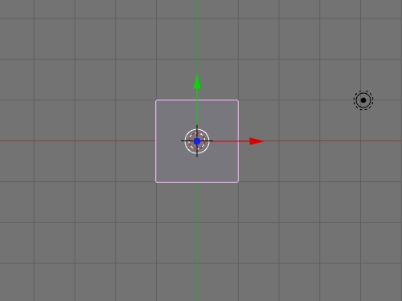
Appuyez sur X pour supprimer et confirmer la suppression.
Espace / Add / Mesh / Plane
Vous avez alors votre plan en edit mode. Utilisez le widget Scale :
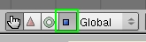
Et augmentez la taille en utilisant les flèches rouges et vertes de votre plan pour avoir une zone où l'on pourra faire tomber nos dominos, au besoin dézoomez avec la molette (multipliez la taille de base par 30 pour avoir toute la scène de libre), maintenez CTRL enfoncé pour magnétiser vos changements.
Appuyez sur la touche 0 de votre pavé numérique, pour avoir la vue caméra, et appuyez sur Tab pour sortir de l'edit mode et passer en mode objet.
Ouvrez l'onglet logic, et activez Bound :
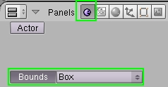
Ceci va permettre à Blender de comprendre que c'est un plan qui est rigide.
Voilà nous avons notre scène toute chaude ! Prêt à créer un domino ? ^^
Allez en vue de face, 1 du pavé numérique, puis Espace / Add / Mesh / Cube.
Appuyez sur G (pour activer le mode déplacement), et déplacez-le d'une unité vers le haut, en magnétisant avec CTRL (de façon à avoir le domino juste au-dessus du plan).
Redimensionnez votre domino à votre guise avec le widget scale bleu, rouge et vert de votre cube. Tournez autour de lui en maintenant enfoncée la molette de votre souris.
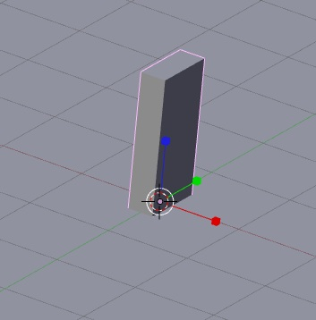
Vous devriez avoir un truc du genre.
Sélectionnez l'onglet matériaux, ajoutez-en un, et changez la couleur du matériel. Vous verrez plus tard pourquoi nous avons fait ça.
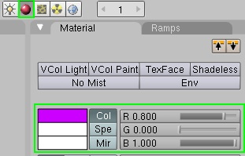
Comme ceci par exemple.
Maintenant nous allons lui assigner les propriétés physiques d'un domino, cliquez sur l'onglet logic, cochez Bounds (laissez Box), puis cliquez sur Actor, Dynamic, et Rigid Body, comme ceci :
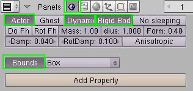
Actor : qui va jouer un rôle Dynamic : qui va bouger Rigid Body : qui va se soumettre aux règles de physiques (comme la gravité par exemple) Bounds : dans quelle forme de base le logiciel peut-il calculer ses mouvements (Box = simple boîte) Mass : détermine le poids du domino. Ici 1 convient parfaitement.
Ceci fait, appuyez sur Tab pour sortir de l'édit mode, puis choisissez l'onglet Editing (F9), et cliquez sur Centre New. Ce qui centrera le point de rotation au centre de l'objet, très important pour les collisions ! ^^
Félicitations ! Vous avez fait le plus dur ! Envie de commencer à s'amuser ? :p
Appuyez sur la touche 7 du pavé numérique pour passer en vue du dessus.
Utilisez Shift + D(Shift = maj) pour dupliquer votre objet. Utilisez R pour tourner votre domino, et G pour le bouger. Répétez cette opération plusieurs fois pour obtenir un petit parcours. :-°
(Maj + molette pour déplacer la vue en restant en vue du dessus)
Maintenant clic droit sur votre premier domino, celui qui fera tomber tout le parcours.
Bougez un peu la vue en maintenant la molette enfoncée, puis utilisez le widget rotation, pour incliner votre domino pour qu'il fasse tomber tous les autres !
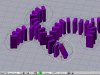(sur mon image il fallait le tourner avec l'axe vert)
Ce n'était pas si dur hein ? ^^ Maintenant, animons tout ça !
Appuyez sur 0 du pavé numérique, pour afficher ce que voit la caméra. Recadrez-la si besoin avec G et R. Une fois la caméra cadrée, appuyez sur P (comme Play game)
Woah l'extase ! Ça marche !! :D
Eh dis, c'est tout moche, il n'y a aucun contour, juste une couleur unie par objet !
C'est pour permettre de rendre fluide le moteur de physique. Vous remarquerez que si on appuie sur Alt + A (lancement de l'animation), rien ne se fait ! Pourquoi ?
Parce que ce que nous avons vu, c'était du temps réel, il va nous falloir le mettre en courbes IPOs. (autrement dit, en truc animable pour faire une vidéo).
Donc, pour ce faire, cliquez dans le menu Game, activez Record Game Phsics to IPO, et Show Framerate and Profile.
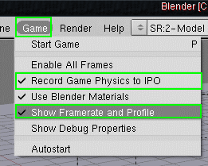
Record game Physics to IPO : Enregistrez les mouvements physiques dans les courbes IPOs. Show Framerate and Profile : Voir quelle est votre vitesse d'enregistrement.
Et comme vous pouvez le voir : Start Game, ou P
Bon ben appuyez sur P ^^
Une fois terminé, appuyez sur Echap.
Maintenant, si vous appuyez sur Alt + A (pour lancer l'animation), vous constaterez que ça fonctionne, mais que c'est trop lent !
Allez dans le NLA, en cliquant sur le bouton en bas à gauche de la fenêtre 3D :
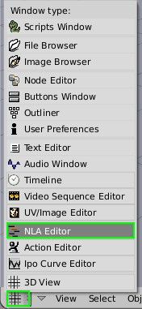
Et vous obtenez une fenêtre avec tout pleins de losanges blancs ! Comme c'est une animation complexe, c'est normal. Appuyez sur A pour tous les sélectionner. Ils vont devenir jaunes une fois sélectionnés. Ensuite, appuyez sur S (pour activer le redimensionnement), puis maintenez CTRL et MAJ (ctrl pour magnétiser et maj pour magnétiser plus précisément), et bougez la souris pour avoir un ScaleX de 0.500, comme ceci :
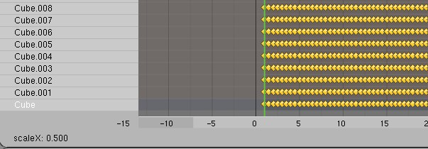
Retournez dans la 3D View :
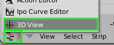
Appuyez sur F10 pour aller dans le panneau render, et mettez 30 FPS (images par seconde), pour que l'animation soit plus fluide :
{kind=link}
{kind=link}